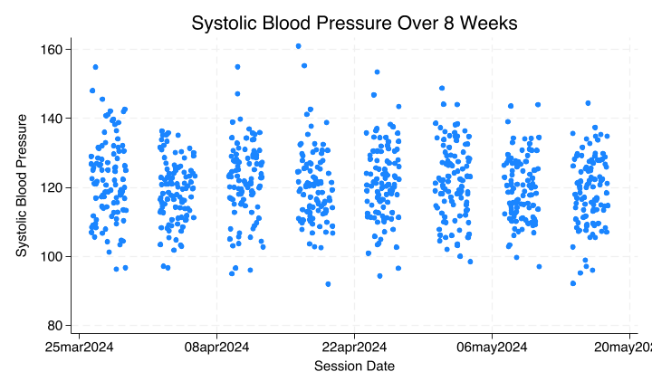
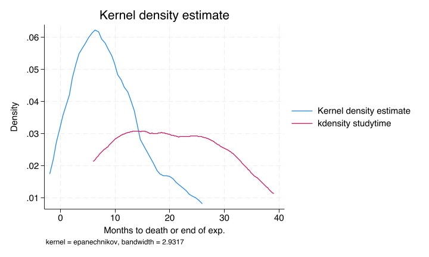
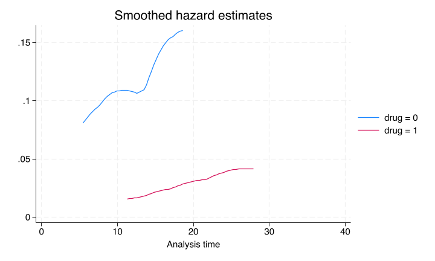
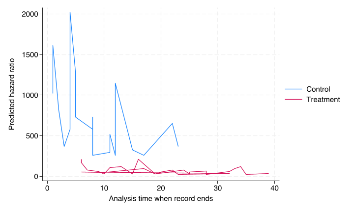

Stata#
Show code cell source
qui {
// ChatGPT wrote this script following a few instructions from me
* I'll indicate with `*` the points I edited for it to work
// Very impressive since this was a first iteration
clear
// Set the number of students and sessions
local nstudents 100
local nsessions 8
// Create an empty dataset
set obs 8
gen student_id = .
gen session = .
gen sbp = .
gen session_date = .
// Loop over each student
forvalues i = 1/`nstudents' {
// Generate data for each session for the current student
forvalues j = 1/`nsessions' {
// Generate student ID
replace student_id = `i'
// Generate session
replace session = `j'
// Generate simulated systolic blood pressure measurements
set seed `i'`j' // Set seed based on student and session
replace sbp = rnormal(120, 10)
// Append data for the current session to the dataset
*append
*ChatGPT included the "append" command with no additional syntax
}
*I inserted this line of code
if c(os) == "MacOSX" {
save student`i', replace
}
else {
save student`i', replace
}
}
* ChatGPT's contribution ends at this point
clear
forvalues i = 1/`nstudents' {
append using student`i'.dta
*Please understand what mess is wrought by blocking this "rm" line of code
rm student`i'.dta
}
* Sort the dataset
sort student_id session
* Display the first few observations
list student_id session sbp in 1/10
* Not what we wanted
bys student_id: replace session = _n
* Let's include the dates
local session_date = d(28mar2024)
forvalues i = 1/8 {
replace session_date = `session_date' if session == `i'
local session_date = `session_date' + 7
}
format session_date %td
codebook
replace sbp = round(sbp)
if c(os) == "MacOSX" {
save student_pressure, replace
}
else {
save student_pressure, replace
}
count
capture isid student_id
if _rc != 0 {
di `"Observations are nested within "student_id" "'
}
else {
di `"student_id" uniquely identifies observations"'
}
}
qui {
use student_pressure, clear
// Line plot of SBP over the 8-week period
twoway (scatter sbp session_date, sort jitter(9)) ///
, xtitle("Session Date") ytitle("Systolic Blood Pressure") ///
title("Systolic Blood Pressure Over 8 Weeks") legend(off)
graph export stata.png, replace
}
file /Users/apollo/.stata_kernel_cache/graph0.svg saved as SVG format
file /Users/apollo/.stata_kernel_cache/graph0.pdf saved as PDF format

Perplexity.ai#
use https://www.stata-press.com/data/r18/drugtr, clear
qui stset studytime, failure(died)
(Patient survival in drug trial)
qui kdensity studytime if drug==0, addplot(kdensity studytime if drug==1)
qui graph export pdf.png, replace

qui sts graph, by(drug)
graph export surv.png, replace
file surv.png written in PNG format

qui sts graph, by(drug) ha
graph export haz.png, replace
file haz.png written in PNG format

qui stcox drug age
qui estat phtest, detail
qui stcox drug age, tvc(age)
qui stcox drug age, tvc(age) texp(ln(_t))
estimates store model1
qui stcox drug age
estimates store model2
qui lrtest model1 model2
qui {
predict hr, hr
twoway (line hr _t if drug==0) (line hr _t if drug==1), ///
legend(order(1 "Control" 2 "Treatment"))
qui graph export tvc.png, replace
}
file /Users/apollo/.stata_kernel_cache/graph1.svg saved as SVG format
file /Users/apollo/.stata_kernel_cache/graph1.pdf saved as PDF format

To help build intuition around Cox regression with time interaction in Stata, I can provide some example code and explanations. Here’s a step-by-step approach:
Set up the data:
use https://www.stata-press.com/data/r18/drugtr, clear
stset studytime, failure(died)
This loads a sample dataset about patient survival in a drug trial and sets up the survival-time data[5].
Run a basic Cox model:
stcox drug age
This fits a simple Cox model with drug treatment and age as covariates[5].
Add a time interaction for age:
stcox drug age, tvc(age)
This model includes a time-varying coefficient for age. The tvc() option specifies that age should interact with time[5].
Interpret the results:
The output will show coefficients for drug, age, and age interacted with time. If the interaction term is significant, it suggests the effect of age on hazard varies over time, potentially violating the proportional hazards assumption[5].
Visualize the time-varying effect:
predict hr, hr
twoway (line hr _t if drug==0) (line hr _t if drug==1), ///
legend(order(1 "Control" 2 "Treatment"))
This plots the predicted hazard ratios over time for both treatment groups[1].
Test the proportional hazards assumption:
estat phtest, detail
This performs a formal test of the proportional hazards assumption[1].
Explore different time functions:
stcox drug age, tvc(age) texp(ln(_t))
This uses a logarithmic function of time for the interaction. You can experiment with different functions to see how they affect the model[5].
Compare models:
estimates store model1
stcox drug age
estimates store model2
lrtest model1 model2
This compares the model with time interaction to the simpler model using a likelihood ratio test[2].
By working through these steps, you can gain intuition about how time interactions work in Cox regression, how they affect model interpretation, and how to assess their importance. Remember that the choice of time function can significantly impact results, so it’s important to consider the theoretical justification for any particular specification[1][5].
Citations: [1] http://pauldickman.com/video/interactions/interactions_stata.pdf [2] https://www.statalist.org/forums/forum/general-stata-discussion/general/638949-cox-regression-interaction-interpretation [3] https://www.youtube.com/watch?v=mxS8YbA-Zyw [4] https://www.stata.com/support/faqs/statistics/estimate-cox-model/ [5] https://www.stata.com/manuals/ststcox.pdf